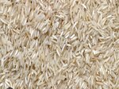

Our products:
- Cassava
- Cassava, scientifically known as Manihot esculenta, is a woody shrub native to South America. It is widely cultivated as an annual crop in tropical and subtropical regions for its edible starchy tuberous root, a major source of carbohydrates.

- Rice
- Rice, scientifically known as Oryza sativa, is one of the world's most important staple foods, particularly in Asia. It provides sustenance to more than half of the global population.
- Yam
- Yams, scientifically known as Dioscorea species, are starchy tuber vegetables native to Africa and Asia. They are distinct from sweet potatoes and are a significant source of carbohydrates and essential nutrients in many parts of the world.

- Potatoes
- Potatoes, scientifically known as Solanum tuberosum, are tuberous crops native to the Andes region of South America. They are one of the most widely grown and consumed crops globally, serving as a vital food source and an important agricultural commodity.